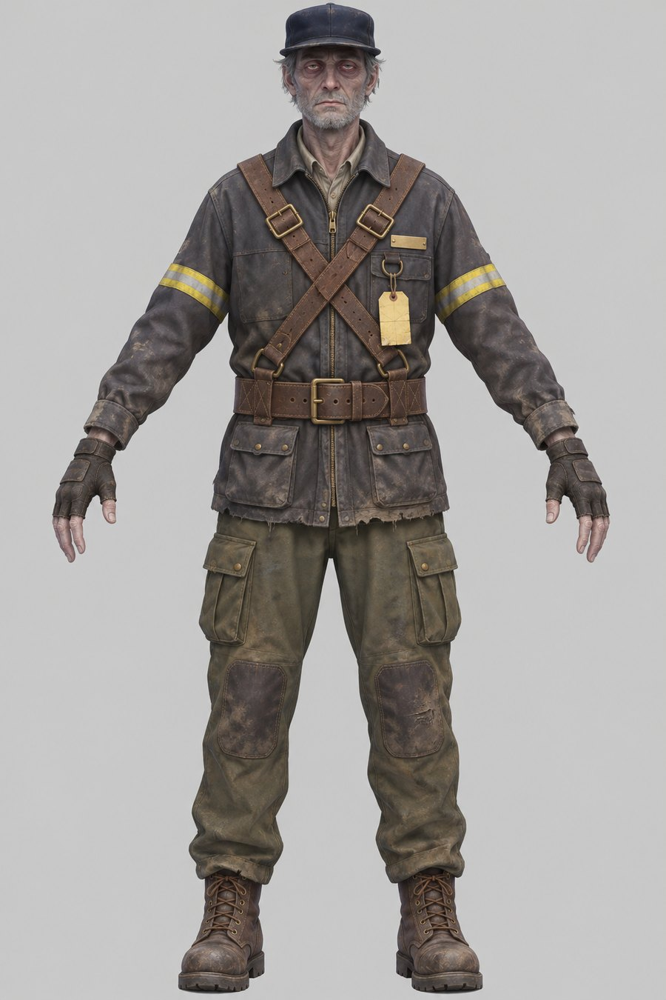
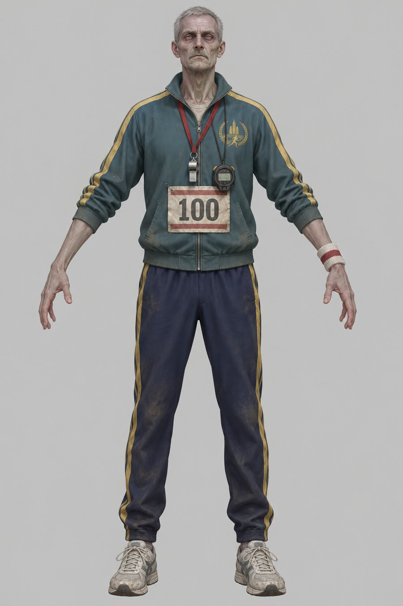
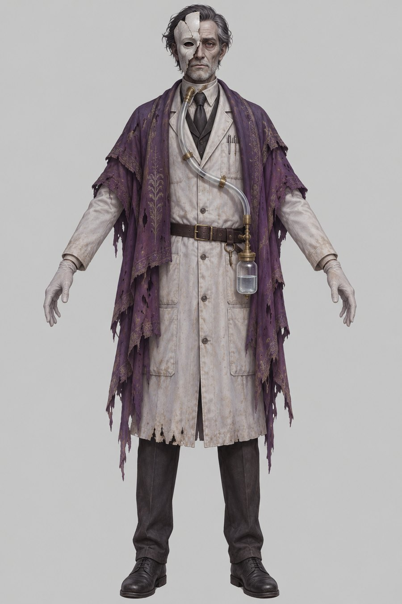

No more stand-ins: five guardians recast in a day
The Chair, the Conductor, the Freight Porter and the Pacer all got bodies and fights of their own, and the founder at the top got a face. Every one of the sixteen guardians is now properly cast.
This morning four guardians were still stand-ins: borrowed zombie bodies and office-worker scans whose arms could not move. Tonight there are none. Here is how each one went, including what broke.
A rule that made it fast
Pondd's other game, Ink & Legend, has six duel opponents, each with a fight pattern that took weeks to tune. So the rule for today was: every guardian borrows one of them. A new body, an old master's moves, and one thing of his own kept for range.
The Chair: the monk's bare hands
The Chair of the Owners' Assembly still keeps the minutes on floor 55. His body is African Dandy by Tony Flanagan, a free model, with his hair greyed and his charcoal suit paled.
He fights like Ink & Legend's bell-keeping monk: three tolling blows, a low sweep, one great rising strike. Cut into his guard and he turns it aside:
you do not have the floor. wait until i have finished speaking.
His division bell still rings across the chamber when you back away.
The Conductor: a baton for a sword
Floor 95's Conductor was a scan with his arms fused to his sides, which is a problem for a man with a baton. He is now a waistcoated figure from Renderpeople's free scanned pack.
He takes the Silver Steward's pattern: a cut, a double, and a rest. In the rest he only watches, baton up. Cut him then and he answers at once.
a rest is not silence. it is counted.
The Freight Porter: why is a delivery man a boss?
Pondd asked the right question: why is the delivery guy worth fighting? The honest answer was that he was not. So his story was rewritten.
The mist at the gala was only the final treatment. For months before it, the residents had been taking a course, sent up in sealed cases by night freight. He carried every one and took a signature for each. He has the book. One door said no, and her suitcase is still on his cart with a yellow tag.
His body is the first one made a new way: a drawing, turned into a rigged 3D model by Tripo.


Tripo also gave him a warm-up routine, which became his introduction. He touches his toes, puts his hands on his hips and says:
i am too old for this shit.
It took four takes. In the first he stood frozen through his own introduction: the clip had been carried across as a single pose. In the second he moved, as a black shape against the sunset. Then the light was too strong and he was white. The fourth is the one above.
The Pacer: a coach with a javelin
The Coach of the Hundred-Lap Club came the same way, from a drawing.


He fights like the Closed Gate, a spearman. For a track coach the spear became a javelin: a jab, an overhead he holds high before it falls, and a lunge that first hops back out of reach. Cut him while he waits and he side-steps:
false start. you go when i have gone.
The founder gets a face
Dr. Amagiri, at the top, was a faceless figure in a metal mask. That is a hard thing to fight as somebody's father. We tried rigging the old model again first; it moved, but his staff was part of his body and bent with his arm.
So he was redrawn: half the mask broken away, one eye showing, a lab coat under the torn robe.


What has not been checked
- Nobody has played any of them. Everything above was checked with automatic tests and by looking at frames from these films, with a scripted player standing in for Rin.
- The numbers, how hard each blow hits and how long each opening lasts, are borrowed from Ink & Legend and have not been tuned for this game.
- The Porter's pole and the Pacer's javelin sit in one fist. In two-handed moves they will look wrong.
- The build on TestFlight is older than all of this.
Next: play them.